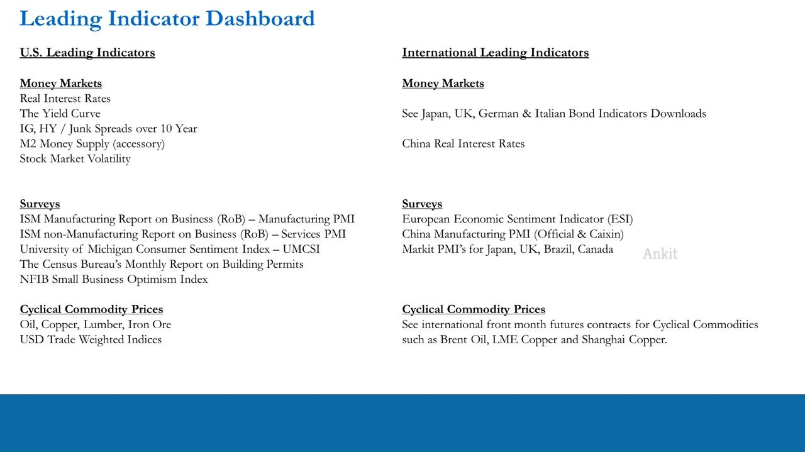
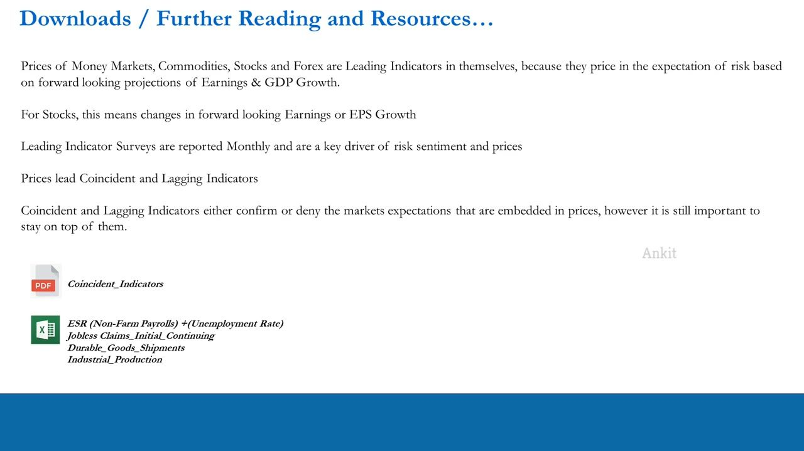
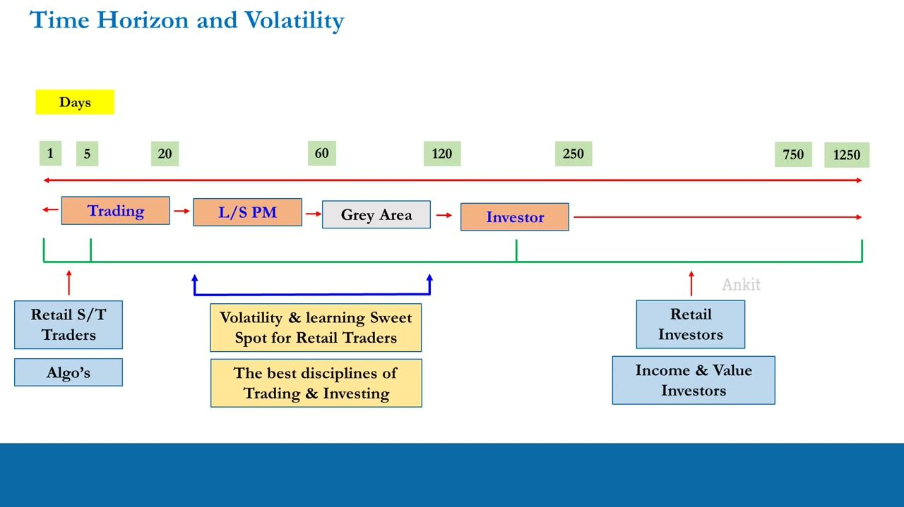
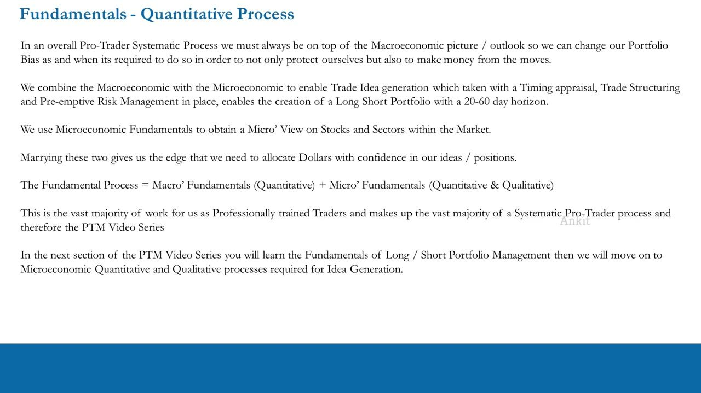
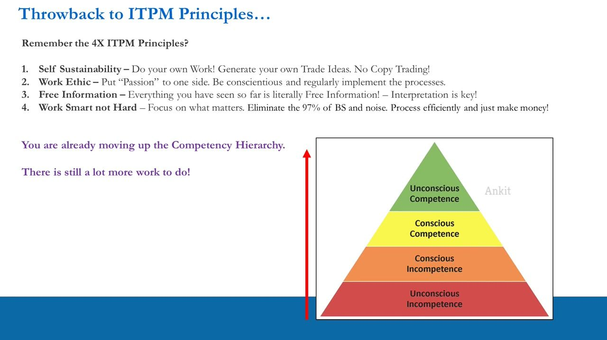

Recap: Bringing the Leading Indicators Together
The capstone of the macro block — how the whole lead-lag chain fits, and why coincident indicators only confirm what prices already told us
Leading indicators (money markets, surveys, commodities, stock/FX prices) forecast the economy; coincident indicators confirm or deny that forecast, and lagging indicators report it last — so we position 20-60 days ahead of the reports, not on them.
The gist
- The macro picture is a lead-lag chain: LEADING indicators (reported monthly / continuously) forecast the future, COINCIDENT indicators (monthly) confirm or deny that forecast in the present, and LAGGING indicators (quarterly) report what already happened.
- Prices of money markets, commodities, stocks and FX are themselves leading indicators — they price in forward-looking projections of earnings and GDP growth, so prices lead the coincident and lagging reports.
- Because prices already lead the reports, by the time a coincident number (like Non-Farm Payrolls) prints there should be no surprises — and generally there aren't. Trading the 'beat' is an amateur mistake that just provides liquidity to those who positioned earlier.
- This is exactly why professionals operate in the 20-60 day time horizon: enter now, let prices move ahead of the earnings/report, and exit around or before 60 days — before a trade drifts into the 60-120 day 'grey area' and becomes an investment.
- All of this macro work generates only one thing: a Long / Short / Neutral portfolio bias. The next block combines it with bottom-up microeconomic fundamentals to pick the actual longs and shorts.
- The goal is absolute return — making money whether the market rises or falls — plus pre-emptive risk management when the macro picture shifts unexpectedly.
The Leading Indicator Dashboard (the full stack)
- This lesson is a natural recap point: the end of the leading-indicators block. The dashboard collects everything covered so far.
- US Money Markets: Real Interest Rates, the Yield Curve, IG and HY/Junk spreads over the 10-Year, M2 Money Supply (accessory), Stock Market Volatility.
- US Surveys: ISM Manufacturing PMI, ISM non-Manufacturing (Services) PMI, University of Michigan Consumer Sentiment Index (UMCSI), Census Bureau Building Permits, NFIB Small Business Optimism Index.
- US Cyclical Commodity Prices: Oil, Copper, Lumber, Iron Ore; plus USD Trade-Weighted Indices.
- International: bond indicators for Japan/UK/Germany/Italy and China Real Interest Rates; European Economic Sentiment Indicator (ESI), China Manufacturing PMI (Official and Caixin), Markit PMIs (Japan, UK, Brazil, Canada); international front-month commodity futures (Brent Oil, LME Copper, Shanghai Copper).
- The international bond and commodity items are flagged as further self-study using the downloaded material, followed on a weekly-to-monthly basis.
The dashboard is the checklist of leading indicators the course has taught. It is monitored continuously so the trader always has a current read on where the economy is heading.

The lead-lag chain: leading, coincident, lagging
- Prices of money markets, commodities, stocks and FX are leading indicators in themselves, because they price in the expectation of risk based on forward-looking projections of Earnings and GDP growth. For stocks this means changes in forward-looking earnings / EPS growth.
- Leading indicator surveys are reported monthly and are a key driver of risk sentiment and prices because they are forward-looking.
- Prices lead coincident and lagging indicators.
- Coincident and lagging indicators either confirm or deny the market's expectations that are already embedded in prices — but it is still important to stay on top of them.
- Downloads for this lesson: a Coincident Indicators PDF, plus spreadsheets for ESR (Non-Farm Payrolls + Unemployment Rate), Jobless Claims (Initial & Continuing), Durable Goods & Shipments, and Industrial Production.
This is the core of the capstone. Coincident indicators are confirmation indicators of what the leading indicators predicted months earlier; lagging indicators (earnings, GDP) report last. The trader forecasts off the leaders and uses the coincident/lagging reports only to confirm the view.

The four US coincident (confirmation) indicators
- CPI / PPI inflation is a coincident indicator (covered earlier under cyclical commodity prices; reported monthly).
- Employment Situation Report (ESR): monthly, released 8:30am ET on the first Friday of each month for the previous month. Contains Non-Farm Payrolls (NFP), the Unemployment Rate, and private- and government-sector employment. The ESR shows whether conditions the leading indicators predicted 6-12 months earlier are now appearing in the economy.
- Jobless Claims (Initial & Continuing): reported weekly (8:30am ET Thursdays). Initial = new filings for unemployment insurance; Continuing = people in long-term unemployment. Its appeal is timeliness — four weekly claims reports print between each monthly ESR, so NFP is essentially known in advance.
- Durable Goods & Shipments: monthly (3-4 weeks after month-end). New orders from 4,000+ manufacturers of capital goods with a 3-year+ useful life, across 85+ industries — a coincident sign of business demand and confidence. Headline often excludes volatile Transportation and Defence orders.
- Industrial Production: monthly (~9:15am ET around the 15th). Raw volume of goods produced by factories, mines and utilities; used to compute capacity-utilization ratios (base year = 2002). Usually lags the ISM / NMI by ~6 months.
NFP is over-hyped: it draws disproportionate media attention and sucks in even professionals, yet holds no surprises because weekly jobless claims (and the ISM/NMI employment components) already told us the direction. Even the Fed watches jobless claims. Use these to confirm or deny the GDP/earnings view already taken from the leaders — never to initiate positions.
Why we live in the 20-60 day horizon
- Prices lead the monthly and quarterly reports, so a trade is entered before the report — for a stock, before its next earnings (which can be up to a quarter away).
- Enter now, expect prices to move over the next 20-60 days as they price in the coming report, and exit around or before 60 days.
- Classic pattern: a stock rallies into earnings, then goes sideways or down when the good number actually prints — the expectation was already priced in and profit-taking follows. Same at the macro level around the jobs report.
- Retail and even pro day traders buy the 'beat' on the day of the number — a mistake, because they are providing liquidity to the 20-60 day operators who positioned earlier and are now exiting.
- Time-horizon map (days): 1-5 = short-term retail/algo traders; ~20-120 = the volatility and learning sweet spot, the best disciplines of trading and investing; 60-120 = the grey area where a trade drifts into an investment; ~750+ = retail / income / value investors.
- The IPLT series proved statistically that the 20-60 day (1-3 month) horizon maximises opportunity set via time horizon and volatility, which is what gives consistency in returns.
This ties the lead-lag chain to positioning. Because prices lead the reports, the edge is captured by positioning ahead of the report inside the 20-60 day window — not by reacting to the report.

What the macro work is for: portfolio bias and absolute return
- So far the PTM has covered only the top-down macroeconomic (quantitative) part of the process; its output is a Long / Short / Neutral bias for the Long/Short portfolio.
- Macro fundamentals give a global-macro view on equities and geographical dispersion: Will global markets rise or fall together? Will the US outperform or underperform the rest of the world? Will Europe outperform the US, and China underperform both?
- Money flows globally shift with the macro outlook — geographically, between asset classes, and within asset classes.
- The aim is absolute return: make money whether the market rises or falls, and don't measure against market returns. When macro expectations shift suddenly, a portfolio can be hit hard for no stock-specific reason (professional money reallocating risk) — so staying on top of macro also enables pre-emptive risk management (shifting bias and composition).
- Fundamental Process = Macro Fundamentals (quantitative) + Micro Fundamentals (quantitative & qualitative). Marrying macro and micro gives the edge to allocate dollars with confidence.
- Next: the fundamentals of Long/Short Portfolio Management, then the microeconomic quantitative and qualitative processes for trade-idea generation.
The capstone reframes every leading indicator as feeding one decision — the portfolio's directional bias — and sets up the next block, where bottom-up fundamentals pick the specific longs and shorts.

Competency hierarchy and the ITPM principles
- The four steps of learning (bottom to top): Unconscious Incompetence (no clue but thinks otherwise) - Conscious Incompetence (knows what's wrong, has the right information) - Conscious Competence (knows how, needs practice/mentoring) - Unconscious Competence (does it right and makes money on autopilot).
- Doing the PTM has moved you out of unconscious incompetence into conscious incompetence — you now have the right information; competence comes later with real-money implementation targeting consistent returns.
- The 4 ITPM principles: (1) Self-Sustainability — do your own work, no copy-trading; (2) Work Ethic — put passion aside, implement the processes regularly; (3) Free Information — everything shown is free; interpretation is the key; (4) Work Smart not Hard — focus on what matters, cut the 97% of noise, and just make money.
- Winning is not one lucky unicorn trade; it is consistency in returns over many trades via a repeatable, robust process. Fall in love with the process.
Anton closes the block by placing the reader on the learning curve and reinforcing that interpretation of the (free) data, done consistently, is where the edge comes from.

Glossary
- Leading indicatorA forward-looking measure — money markets, surveys, cyclical commodities, and stock/FX prices — that forecasts future earnings and GDP growth, and therefore the economy.
- Coincident (confirmation) indicatorA monthly measure that tells us what is happening in the economy NOW and confirms or denies what the leading indicators predicted: CPI/PPI, the Employment Situation Report, Jobless Claims, Durable Goods, Industrial Production.
- Lagging indicatorA measure reported last, looking back over the previous quarter — company earnings and GDP growth — that confirms or denies the earlier leading and coincident readings.
- Employment Situation Report (ESR)Monthly BLS report, released first Friday for the previous month, containing Non-Farm Payrolls, the Unemployment Rate, and private/government employment.
- Non-Farm Payrolls (NFP)Jobs added to the US economy last month (excluding government, private household, non-profit, and seasonal farm employees). Over-hyped: it holds no surprises because weekly jobless claims already show the trend.
- Jobless Claims (Initial & Continuing)Weekly count of people filing for unemployment insurance (Initial = new filings; Continuing = long-term). Four print between each monthly ESR, so NFP is effectively known in advance.
- Durable Goods & ShipmentsMonthly new orders from 4,000+ manufacturers of capital goods with a 3-year+ useful life (85+ industries) — a coincident sign of business demand.
- Industrial ProductionMonthly raw volume of output from factories, mines and utilities (capacity utilization, base year 2002); usually lags the ISM/NMI by ~6 months.
- Grey areaThe 60-120 day zone where a trade drifts into an investment; the trader aims to exit around or before 60 days to stay out of it.
- Absolute returnMaking money whether the market rises or falls, without measuring performance against market (benchmark) returns.